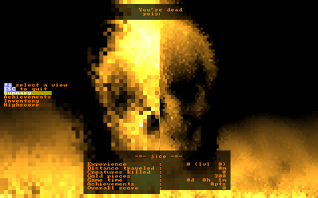

5.5. Blitting an image on a console
Standard blitting
This function blits a rectangular part of the image on a console without scaling it or rotating it. Each pixel of the image fills a console cell.
void TCODImage::blitRect(TCODConsole *console, int x, int y, int w=-1, int h=-1, TCOD_bkgnd_flag_t bkgnd_flag = TCOD_BKGND_SET ) const
void TCOD_image_blit_rect(TCOD_image_t image, TCOD_console_t console, int x, int y, int w, int h, TCOD_bkgnd_flag_t bkgnd_flag)
image_blit_rect(image, console, x, y, w, h, bkgnd_flag)
| Parameter | Description |
|---|---|
| image | In the C version, the image handler, obtained with the load function. |
| console | The console on which the image will be drawn. In the C version, use NULL for the root console. |
| x,y | Coordinates in the console of the upper-left corner of the image. |
| w,h | Dimension of the image on the console. Use -1,-1 to use the image size. |
| flag | This flag defines how the cell's background color is modified. See TCOD_bkgnd_flag_t. |
Blitting with scaling and/or rotation
This function allows you to specify the floating point coordinates of the center
of the image, its scale and its rotation angle.
void TCODImage::blit(TCODConsole *console, float x, float y, TCOD_bkgnd_flag_t bkgnd_flag = TCOD_BKGND_SET, float scalex=1.0f, float scaley=1.0f, float angle=0.0f) const
void TCOD_image_blit(TCOD_image_t image, TCOD_console_t console, int x, int y, TCOD_bkgnd_flag_t bkgnd_flag, float scalex, float scaley, float angle)
image_blit(image, console, x, y, bkgnd_flag, scalex, scaley, angle)
| Parameter | Description |
|---|---|
| image | In the C version, the image handler, obtained with the load function. |
| console | The console on which the image will be drawn. In the C version, use NULL for the root console. |
| x,y | Coordinates in the console of the center of the image. |
| flag | This flag defines how the cell's background color is modified. See TCOD_bkgnd_flag_t. |
| scalex,scaley | Scale coefficient. Must be > 0.0. |
| angle | Rotation angle in radians. |
Blitting with a mask
When blitting an image, you can define a key color that will be ignored by the blitting function. This makes it possible to blit non rectangular images or images with transparent pixels.
void TCODImage::setKeyColor(const TCODColor keyColor)
void TCOD_image_set_key_color(TCOD_image_t image, TCOD_color_t keyColor)
image_set_key_color(image, keyColor)
| Parameter | Description |
|---|---|
| image | In the C and python version, the image handler, obtained with the load function. |
| color | Pixels with this color will be skipped by blitting functions. |
Example:
TCODImage *pix = TCODImage("mypix.bmp");
pix->setKeyColor(TCODColor::red);
// blitting the image, omitting red pixels
pix->blitRect(TCODConsole::root,40,25);
TCOD_image_t pix = TCOD_image_new(10,10);
TCOD_image_set_key_color(pix,TCOD_red);
TCOD_image_blit_rect(pix,NULL,40,25,5,5,TCOD_BKGND_SET);
pix = libtcod.image_new(10,10)
libtcod.image_set_key_color(pix,libtcod.red)
libtcod.image_blit_rect(pix,0,40,25,5,5,libtcod.BKGND_SET)
Blitting with subcell resolution
Eventually, you can use some special characters in the libtcod fonts :

to double the console resolution using this blitting function.
|
Comparison before/after subcell resolution in TCOD :  |
Pyromancer ! screenshot, making full usage of subcell resolution : |
void TCODImage::blit2x(TCODConsole *dest, int dx, int dy, int sx=0, int sy=0, int w=-1, int h=-1 ) const;
void TCOD_image_blit_2x(TCOD_image_t image, TCOD_console_t dest, int dx, int dy, int sx, int sy, int w, int h);
image_blit_2x(image, dest, dx, dy, sx=0, sy=0, w=-1, h=-1)
| Parameter | Description |
|---|---|
| image | In the C and python version, the image handler, obtained with the load function. |
| dest | The console of which the image will be blited. Foreground, background and character data will be overwritten. |
| dx,dy | Coordinate of the console cell where the upper left corner of the blitted image will be. |
| sx,sy,w,h | Part of the image to blit. Use -1 in w and h to blit the whole image. |